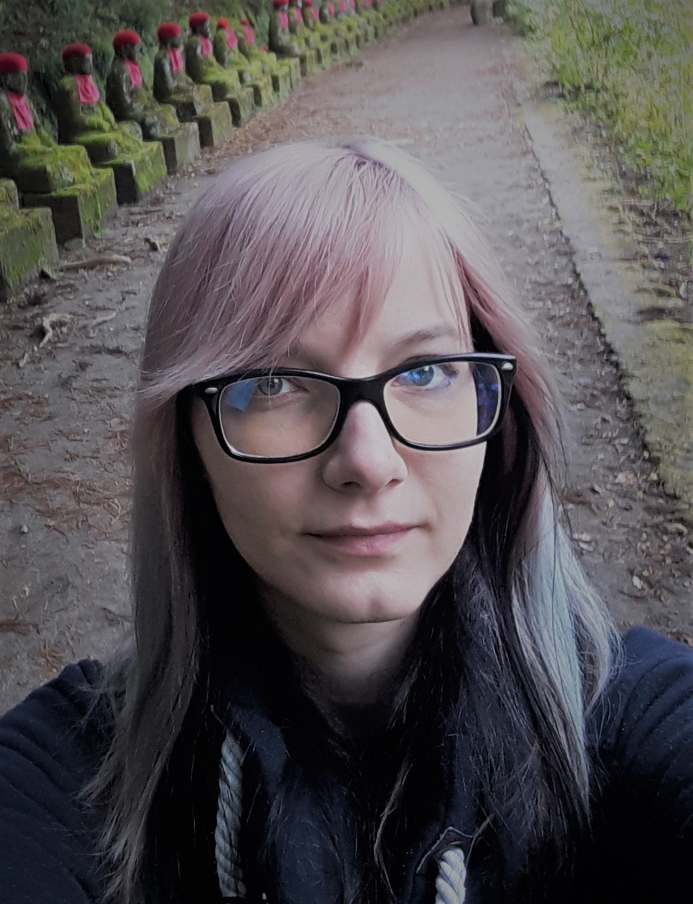

Lenka Harmáčková
About
My research concerns evolution and geographic variability in functional traits of Australian birds, gradients of species richness, mapping phylogenetic and functional diversity, and analysing community structure at different spatial and time scales.

Contact
Ornithological station ORNIS
Comenius Museum in Prerov
Bezručova 10
750 02 Přerov
&
Department of Zoology
Faculty of Science, Palacký University
17. listopadu 50
779 00 Olomouc
email: lenka.harmackova[at]upol.cz
Education & Experience
PhD study:
2013 - 2019
Palacky University in Olomouc
Programme: Zoology
Dissertation thesis: Macroecology, life histories, and diversity of Australian birds
Supervisor: doc. Vladimír Remeš, Ph.D.
Master study:
2011 - 2013
Palacky University in Olomouc
Programme: Zoology
Diploma thesis: Geographical variability in functional traits of Australian birds
Supervisor: doc. Vladimír Remeš, Ph.D.
Bachelor study:
2008 - 2011
The University of J. E. Purkyně in Ústí nad Labem
Programme: Biology
Bachelor thesis: Avifauna of the Chabařovice ponds (Ústí nad Labem district)
Supervisor: doc. RNDr. Jaromír Hajer, CSc.
Foreign experiences
May - July 2022 (two months)
American Museum of Natural History in New York, USA - sampling coloration of the Aves: Meliphagoidea group.
September 2018 - 2019 (one year)
Senckenberg Biodiversität und Klima Forschungszentrum (SBiK-F) in Frankfurt am Main, Germany (Support of Academic mobility at Palacky University Olomouc). Mentor: Dr. Susanne Fritz.
May - August 2016 (four months)
Senckenberg Biodiversität und Klima Forschungszentrum (SBiK-F) in Frankfurt am Main, Germany (Erasmus+ internship). Mentor: Dr. Christian Hof.
Publications
Remeš, V. & Harmáčková, L. (2025): Completing the speciation cycle: Ecological niches and traits predict local species coexistence in birds across the globe. Global Ecology and Biogeography 34: e70002.
Leroy, H., Harmáčková, L., Friedman, N. R. & Remeš, V. (2025): Sympatry, syntopy, and species age: disentangling drivers of signal evolution in a large radiation of passerine birds (Meliphagides). Biological Journal of the Linnean Society 144: blae125.
Harmáčková L. (2024): Jak dál s názvoslovím ptáků? Ekolist 8.1.2024.
Harmáčková L. & Remeš V. (2024): The evolution of local co-occurrence in birds in relation to latitude, degree of sympatry, and range symmetry. The American Naturalist 203: 432–443
Chytil J., Vymazal M. & Harmáčková L. (2023): Reconstruction of the ORNIS building and the new exhibition Bird of Czechia. Zprávy MOS 81: 115–120.
Remeš V. & Harmáčková L. (2023): Resource use divergence facilitates the evolution of secondary syntopy in a continental radiation of songbirds (Meliphagoidea): Insights from unbiased co-occurrence analyses. Ecography: e06268.
Kovařík P., Hladká T., Harmáčková L. & Grim T. (2022): Range expansion of the Eurasian Scops Owl (Otus scops) in Czechia. Sylvia 58: 3–16.
Grim T., Kovařík P., Harmáčková L., Tošenovský E., Hladká T., Spáčil P., Krištín A., Poprach K. & Sviečka J. (2022): First documented urban breeding events of the Eurasian Scops Owl (Otus scops) in Czechia. Sylvia 58: 17–35.
Remeš V., Harmáčková L., Matysioková B., Rubáčová L. & Remešová E. (2022): Vegetation complexity and pool size predict species richness of forest birds. Frontiers in Ecology and Evolution 10: 964180.
Harmáčková L. (2021): Interspecific feeding in birds: A short overview. Acta Ornithologica 56: 1–14.
Harmáčková L. (2020): Zajímavá ornitologická pozorování v Karlovarském kraji v letech 2010-2019. Sborník muzea Karlovarského kraje 28: 237–288.
Harmáčková L., Remešová E. & Remeš V. (2019): Specialization and niche overlap across spatial scales: Revealing ecological factors shaping species richness and coexistence in Australian songbirds. Journal of Animal Ecology 88: 1766–1776.
Remeš V. & Harmáčková L. (2018): Disentangling direct and indirect effects of water availability, vegetation, and topography on avian diversity. Scientific Reports 8: 15475.
Harmáčková L. & Remeš V. (2017): The evolution of clutch size in Australian songbirds in relation to climate, predation, and nestling development. Emu - Austral Ornithology 117: 333–343.
Friedman N. R., Harmáčková L., Economo E. P. & Remeš V. (2017): Smaller beaks for colder winters: Thermoregulation drives beak size evolution in Australasian songbirds. Evolution 71: 2120–2129.
Harmáčková L. (2015): Galerie českých malířů ptáků: Lenka Harmáčková. Sluka 11: 69–73.
Conference abstracts
Harmáčková L. & Remeš V. (2023): The evolution of local co-occurrence in birds in relation to latitude, sympatry, and range symmetry. In: Macroecology and Biogeography Meeting, 3.-6. May 2023, Bayreuth, Germany. (talk)
Harmáčková L. & Remeš V. (2023): Evoluce lokální koexistence u ptáků vzhledem k zeměpisné šířce, sympatrii a symetrii areálů. In: Bryja J., Horsák M. & Horsáková V. (Eds.): Zoologické dny, Sborník abstraktů z konference, 9.-10. February 2023, Brno, Czechia. (poster)
Harmáčková L., Remešová E. & Remeš V. (2022): Foraging specialization and niche overlap in Australian songbirds. In: Ekologie 2022: 8th Conference of the Czech Society for Ecology, 7.–9. September 2022, Brno, Czechia. (invited talk)
Harmáčková L., Remeš V. & Fritz S. (2020): Seasonal changes in diversity of Australian songbirds. In: Macro 2020: Macroecology of the Anthropocene, 2.–5. March 2020, Konstanz, Germany. (poster)
Harmáčková L., Remeš V. & Fritz S. (2020): Seasonal changes in diversity of Australian songbirds. In: Bryja J., Kuras T., Tuf I. H. & Tkadlec E. (Eds.): Zoologické dny, Sborník abstraktů z konference, 6.-7. February 2020, Olomouc, Czechia. (poster)
Harmáčková L., Remešová E. & Remeš V. (2019): Foraging specialization and niche overlap in Australian songbirds. In: Macro 2019: Bridging local patterns and global challenges, 11.–14. March 2019, Würzburg, Germany. (poster)
Harmáčková L., Remešová E. & Remeš V. (2019): Foraging specialization and niche overlap in Australian songbirds. In: International Biogeography Society 9th Biennial Meeting, 8.–12. January 2019, Málaga, Spain. (poster)
Remeš V. & Harmáčková L. (2018): Srážky, vegetace a diverzita ptáků Austrálie. In: Bryja J. & Solský M (Eds.): Zoologické dny, Sborník abstraktů z konference, 8.-9. February 2018, Praha, Czechia. (poster)
Harmáčková L. & Remeš V. (2017): Phylogenetic and functional diversity of Australian birds is shaped by geographic and climatic history, not environmental diversity. In: Macroecology in Space and Time, 10th Annual Meeting of the Specialist Group on Macroecology of the Ecological Society of Germany, Austria and Switzerland, 19.-21. April 2017, Vienna, Austria. (talk)
Harmáčková L., Remeš V. & Hof C. (2017): Evaporative water loss in birds in relation to body mass, climate, and diet. In: Bryja J., Horsák M., Horsáková V., Řehák Z. & Zukal J. (Eds.): Zoologické dny, Sborník abstraktů z konference, 9.-10. February 2017, Brno, Czechia. (poster)
Harmáčková L. & Remeš V. (2016): Vývin mláďat hraje v evoluci velikosti snůšky australských pěvců důležitější roli než klima a predace. In: Bryja J., Sedláček F. & Fuchs R. (Eds.): Zoologické dny, Sborník abstraktů z konference, 11.-12. February 2016, České Budějovice, Czechia. (talk)
Harmáčková L. & Remeš V. (2015): Phylogenetic and functional diversity in Australian birds. EU Macro 2015, 14.-16. June 2015, Copenhagen, Denmark. (poster)
Harmáčková L. & Remeš V. (2015): Velikost snůšky u australských pěvců: klima, predace a vývin mláďat. In: Bryja J., Řehák Z. & Zukal J. (Eds.): Zoologické dny, Sborník abstraktů z konference, 12.-13. February 2015, Brno, Czechia. (poster)
Harmáčková L. & Remeš V. (2015): Species diversity, habitat and food specialisation in Australian birds. In: Gavin D., Beierkuhnlein C., Holzheu S., Thies B., Faller K., Gillespie R. et al. (Eds.): Conference program and abstracts. International Biogeography Society 7th Biennial Meeting, 8.-12. January 2015, Bayreuth, Germany. Frontiers of Biogeography Vol. 6, suppl. 1. International Biogeography Society. (poster)
Teaching
Introduction to data analysis in R language